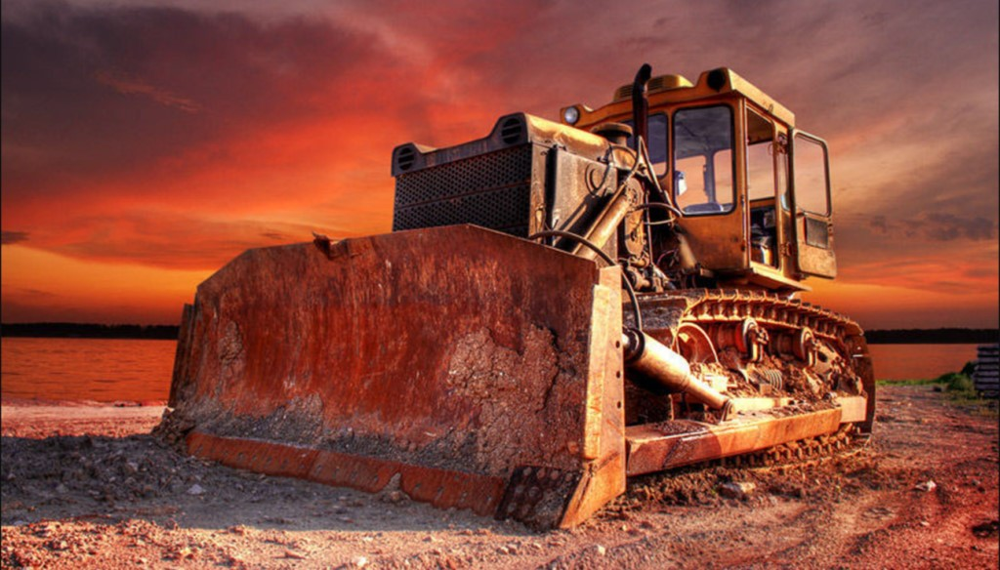

Существует несколько основных видов лесозаготовительной техники: валочные машины, оборудование для первичной обработки, погрузочная техника и лесовозы. У каждого вида свои задачи и своя область применения.
После выделения лесного участка и закрепления его в аренду или собственность лесозаготовители приступают к мульчированию участка леса. Мульчирование леса с целью очистки леса от низкорослых деревьев и кустарников осуществляется с помощью мульчирующей машины. Мульчирующая машина, предназначенная для лесного хозяйства называется «мульчирователь» или «мульчер». Основной механизмом мульчирователя - вращающийся барабан. Посредством стального рубильного инструмента («зубьев») мульчирователь удаляет низкорослую растительность, очищая тем самым участок лесных земель для дальнейших лесозаготовительных работ. Сегодня среди лесозаготовителей широко известна многофункциональная машина-мульчер ТЛП-4М-037. С помощью этого мульчера можно расчистить площадку для лесозаготовительных работ и работ по переработке лесоматериалов, а также осуществлять уход за лесными участками. Для этой цели с помощью мульчера возможно уничтожать старые деревья и древесно-кустарниковую растительность. Мульчер расчищает лесосеки от пней и порубочных остатков, а также создает противопожарные полосы в лесных массивах.
С помощью бульдозеров выкорчевывают лес, но такой способ применяется, только если земля с вырубкой предназначена для сельскохозяйственных угодий, строительства дорог или жилья. Бульдозеры представляют собой гусеничный или колесный трактор-тягач, который также часто используется в лесозаготовительной деятельности. Это самоходная машина, у которой навесное рабочее приспособление расположено вне базы ходовой части машины. В лесозаготовительной деятельности Бульдозеры служат для перемещения древесины на расстояние от 10 до 200 метров. С помощью бульдозера лесозаготовители расчищают площадку для транспортировки сортиментов, а также для дальнейшей обработки лесоматериалов. Важная часть работы, которую можно осуществлять с помощью бульдозера состоит в валке отдельных деревьев. Также бульдозеры используются для срезки кустарников, корчевки пней, удалению камней для расчистки лесозаготовительного участка. С помощью бульдозера лесозаготовители освобождают площадку для лесопереработки от снега и мусора и осуществляют подготовку подъездных дорог для транспортировки сортиментов.
Древовал — ручное рычажное приспособление для валки целых деревьев с корнями. Применялось также для перемещения стволов больших деревьев. В настоящее время практически вытеснено средствами механизации.
Процесс лесозаготовительных работ после мульчирования лесного участка начинается с валки леса (или что тоже самое - рубки леса). Самый простой инструмент, применяемый при рубке леса — бензопила. На смену топорам и пилам, которые были распространены ранее в процессе валки деревьев сегодня пришла современная лесозаготовительная техника, снабженная автоматизированными устройствами. В настоящее время в процессе лесозаготовки применяют два способа валки деревьев: Первый – выкорчевывание. Второй способ наиболее распространенный и называется бескорневая валка. Такой вид лесозаготовительных работ осуществляется при помощи переносных моторных пил или валочных машин. Стволы могут спиливаться либо на уровне земли, либо у корня или с оставлением пней.
При механизированной рубке валка, удаление сучков и раскряжёвка производится с помощью валочной машины. Валочной машиной называется комбайн, осуществляющий только четыре операции на лесозаготовке. В лесозаготовительной деятельности применяются валочно-пакетирующие машины, которые кроме валки деревьев осуществляет также и пакетирование бревен. В основе механизма валочно-пакетирующей машины находится цепная пила. С помощью этой валочной машины можно спиливать деревья диаметром до 90 см. Дальнейшее использование валочно-пакетирующей машины заключается в укладывании поваленных деревьев в штабеля для последующей трелёвки трелевочным трактором.
В настоящее время в лесозаготовительной деятельности широко используются комбайны, которые выполняют более четырех видов работ в процессе валки и сортировки древесины. Такой многофункциональный лесозаготовительный комбайн называется харвестер (от английского названия «harvest” - «собирать урожай»). В перечень работ, которые можно осуществлять с помощью харвестера входит валка леса, очистка ствола от сучьев и верхушки, а также раскряжевка (освобождение дерева от коры). Заключительным этапом выступает сортировка хлыстов на сортименты. С помощью харвестера также может, осуществляется трелёвка древесины.
Автоматическая валочная машина харвестер способна не только спилить дерево, ободрать сучья, срезать верхушку дерева, но и разделить его на части заданного размера всего за минуту. При этом оператор всё это время находится в комфортных условиях кабины и с помощью джойстика управляет процессом. Еще одно преимущество харвестера заключается в том, что компьютер, установленный в кабине оператора не только программирует резку хлыстов на заданные параметра, но и архивирует информацию по замера и размерам отсортированной древесины.
Харвестер работает «в паре» с тягачом-погрузчиком – форвардером. Умные «напарники» способны заменить бригаду лесорубов, работающих «ручным» способом, обеспечив при этом высокую производительность лесозаготовки. Данные машины способны выполнять множество операций. Они осуществляют весь основной цикл лесозаготовительных работ: как валка, раскряжевка, выравнивание бревен, после их спила, погрузка, вытягивание бревен с труднодоступных мест, транспортировка бревен. На лесозаготовительном участке форвардер используют для сбора древесины, дальнейшей сортировки, и, главное, для транспортировки сортиментов древесины от лесозаготовительного участка до проезжей дороги или же до нижнего склада. Форвардер состоит из погрузочного манипулятора и грузовой тележки. Следуя за харвестером форвардер погружает на грузовую тележку бревна, которые затем трелюются на склад. На последней стадии работ по лесозаготовке древесины с помощью форвардера осуществляют погрузку сортиментов на лесовозы.
Наиболее распространенный механический способ транспортировки древесины осуществляется также трелёвочными тракторами. Кроме форвардера на лесозаготовке может быть использован трелевочный трактор, который подтягивает стволы древесины в виде «хластов» к разделочной площадке. Трелевочными тракторами осуществляется распространенный механический способ транспортировки бревен в полу-подвешенном или подвешенном состоянии. После валки леса, обрубки сучьев трелёвочные тракторы начинают потрелёвку, чтобы доставить хлысты для сортировки на сортименты и на раскряжевку. Сортированная древесина трелюются и транспортируются чокерными трелевочными тракторами или бесчокерными тракторами. Отсортированные в соответствии с параметрами хлысты представляет собой сортименты. Далее сортименты формируются в пачки, грузятся и перемещаются к лесовозной дороге, где находится промежуточный склад, с которого происходит погрузка в лесовозы. В качестве погрузчика могут быть использованы различного вида тягачи, лесовозы и погрузчики.
Лесовозом называется грузовой автомобиль, либо самоходная машина, либо железнодорожный вагон, предназначенный для перевозки бревен и пиломатериалов. Лесовоз, предназначенный для транспортировки бревен дорожным способом называется также – автомобиль-сортиментовоз. Такой лесовоз снабжен специальной конструкцией для укладки бревен в штабеля (пачки). Конструкция представляет собой стальные каркасы с пилообразной нарезкой, которая располагается снизу, что позволяет лучше удерживать груз. Спецификой лесовозов является серийное грузовое шасси, а также дополнительная надстройка к нему. Лесовоз, который используется для перевалки сортиментов по бездорожью непосредственно в лесу должен иметь повышенную проходимость. Под повышенной проходимостью лесовоза необходимо понимать такие характеристики, как полный привод, блокировка дифференциалов, а также большой дорожный просвет. Также для лесовозов, перевозящих тяжеловесные грузы необходимо наличие лебедки и системы управления давлением в шинах. В случаях, если лесовоз занимается вывозкой сортиментов с лесных делянок по дорогам, которые на три четверти представляют собой трассу, то необходимость в полном приводе отпадает. Если лесовоз осуществляет вывозку сортиментов с нижних складов, к которым есть дорога с твердым покрытием, или перевозкой леса или пиломатериалов без заезда в лес, то необходимость в повышенных внедорожных требованиях к шасси отпадает.
При больших расстояниях для транспортировки сортиментов и пиломатериалов широко используется перевозка древесины по железной дороге в вагонах-лесовозах. При этом транспортировка древесины по узкоколейной железной дороге производится как в виде хлыстов, так и в виде сортиментов. Для перевозки сортиментов требуется наличие платформы, на которую устанавливают металлические сетки. Для транспортировки хлыстовой древесины необходимо использовать вагона-сцепы. Вагон-сцеп состоит из двух полу-сцепов, соединенных между собой тягой. Причем, длина тяги соответствует длине хлыста. Как было отмечено выше перевозка сортиментов предусматривает наличие платформы, на которую устанавливают металлические сетки. Для транспортировки грузов определенного вида используют специализированные платформы. Такие платформы не имеют бортов, а некоторые также не имеют настила полов. Платформы должны быть оборудованы специальными приспособлениями для крепления лесоматериалов. Например, типовыми ходовыми частями, автосцепами и различными автоматизированными устройствами. Размеры пола стандартной платформы достигают площади до 36,8 кв. метров.

Нажми на кнопку если Артем пидарас на сларке 0/10/0
Нажми на меня и я выросту брат